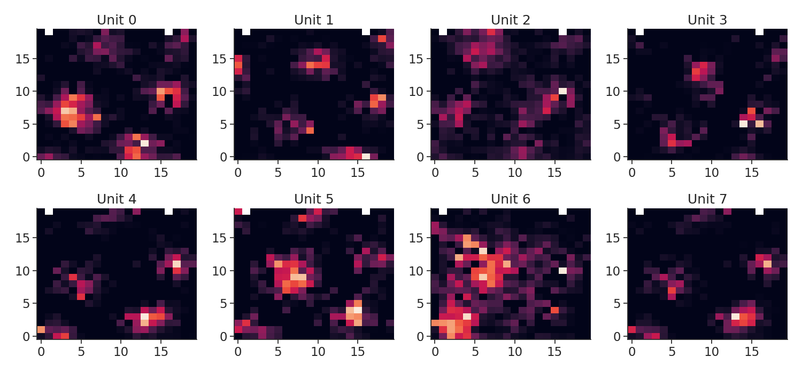
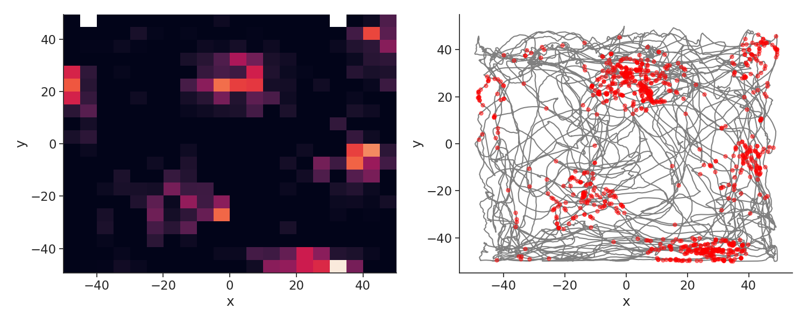

Note
Click here to download the full example code
Streaming data from DANDI
This script shows how to stream data from the DANDI Archive all the way to pynapple.
Warning
This tutorial uses seaborn and matplotlib for displaying the figure as well as the DANDI package
You can install all with pip install matplotlib seaborn dandi
Prelude
The data used in this tutorial were used in this publication: Sargolini, Francesca, et al. "Conjunctive representation of position, direction, and velocity in entorhinal cortex." Science 312.5774 (2006): 758-762. The data can be found on the DANDI Archive in Dandiset 000582.
mkdocs_gallery_thumbnail_number = 2
DANDI
DANDI allows you to stream data without downloading all the files. In this case the data extracted from the NWB file are stored in the nwb-cache folder.
from pynwb import NWBHDF5IO
from dandi.dandiapi import DandiAPIClient
import fsspec
from fsspec.implementations.cached import CachingFileSystem
import h5py
# ecephys
dandiset_id, filepath = (
"000582",
"sub-10073/sub-10073_ses-17010302_behavior+ecephys.nwb",
)
with DandiAPIClient() as client:
asset = client.get_dandiset(dandiset_id, "draft").get_asset_by_path(filepath)
s3_url = asset.get_content_url(follow_redirects=1, strip_query=True)
# first, create a virtual filesystem based on the http protocol
fs = fsspec.filesystem("http")
# create a cache to save downloaded data to disk (optional)
fs = CachingFileSystem(
fs=fs,
cache_storage="nwb-cache", # Local folder for the cache
)
# next, open the file
file = h5py.File(fs.open(s3_url, "rb"))
io = NWBHDF5IO(file=file, load_namespaces=True)
print(io)
Out:
/mnt/home/gviejo/mambaforge/envs/pynapple/lib/python3.10/site-packages/etelemetry/client.py:95: DeprecationWarning: pkg_resources is deprecated as an API. See https://setuptools.pypa.io/en/latest/pkg_resources.html
from pkg_resources import parse_version
/mnt/home/gviejo/mambaforge/envs/pynapple/lib/python3.10/site-packages/pkg_resources/__init__.py:2871: DeprecationWarning: Deprecated call to `pkg_resources.declare_namespace('mpl_toolkits')`.
Implementing implicit namespace packages (as specified in PEP 420) is preferred to `pkg_resources.declare_namespace`. See https://setuptools.pypa.io/en/latest/references/keywords.html#keyword-namespace-packages
declare_namespace(pkg)
/mnt/home/gviejo/mambaforge/envs/pynapple/lib/python3.10/site-packages/pkg_resources/__init__.py:2871: DeprecationWarning: Deprecated call to `pkg_resources.declare_namespace('ruamel')`.
Implementing implicit namespace packages (as specified in PEP 420) is preferred to `pkg_resources.declare_namespace`. See https://setuptools.pypa.io/en/latest/references/keywords.html#keyword-namespace-packages
declare_namespace(pkg)
/mnt/home/gviejo/mambaforge/envs/pynapple/lib/python3.10/site-packages/pkg_resources/__init__.py:2871: DeprecationWarning: Deprecated call to `pkg_resources.declare_namespace('ruamel.yaml')`.
Implementing implicit namespace packages (as specified in PEP 420) is preferred to `pkg_resources.declare_namespace`. See https://setuptools.pypa.io/en/latest/references/keywords.html#keyword-namespace-packages
declare_namespace(pkg)
/mnt/home/gviejo/mambaforge/envs/pynapple/lib/python3.10/site-packages/pkg_resources/__init__.py:2350: DeprecationWarning: Deprecated call to `pkg_resources.declare_namespace('ruamel')`.
Implementing implicit namespace packages (as specified in PEP 420) is preferred to `pkg_resources.declare_namespace`. See https://setuptools.pypa.io/en/latest/references/keywords.html#keyword-namespace-packages
declare_namespace(parent)
/mnt/home/gviejo/mambaforge/envs/pynapple/lib/python3.10/site-packages/pkg_resources/__init__.py:2871: DeprecationWarning: Deprecated call to `pkg_resources.declare_namespace('sphinxcontrib')`.
Implementing implicit namespace packages (as specified in PEP 420) is preferred to `pkg_resources.declare_namespace`. See https://setuptools.pypa.io/en/latest/references/keywords.html#keyword-namespace-packages
declare_namespace(pkg)
A newer version (0.62.0) of dandi/dandi-cli is available. You are using 0.61.2
/mnt/home/gviejo/mambaforge/envs/pynapple/lib/python3.10/site-packages/hdmf/spec/namespace.py:531: UserWarning: Ignoring cached namespace 'hdmf-common' version 1.8.0 because version 1.7.0 is already loaded.
warn("Ignoring cached namespace '%s' version %s because version %s is already loaded."
/mnt/home/gviejo/mambaforge/envs/pynapple/lib/python3.10/site-packages/hdmf/spec/namespace.py:531: UserWarning: Ignoring cached namespace 'hdmf-experimental' version 0.5.0 because version 0.4.0 is already loaded.
warn("Ignoring cached namespace '%s' version %s because version %s is already loaded."
<pynwb.NWBHDF5IO object at 0x7f5c1d5ae1a0>
Pynapple
If opening the NWB works, you can start streaming data straight into pynapple with the NWBFile class.
import pynapple as nap
import matplotlib.pyplot as plt
import seaborn as sns
import numpy as np
custom_params = {"axes.spines.right": False, "axes.spines.top": False}
sns.set_theme(style="ticks", palette="colorblind", font_scale=1.5, rc=custom_params)
nwb = nap.NWBFile(io.read())
print(nwb)
Out:
17010302
Keys Type
units TsGroup
ElectricalSeriesLFP Tsd
SpatialSeriesLED1 TsdFrame
ElectricalSeries Tsd
We can load the spikes as a TsGroup for inspection.
Out:
Index rate unit_name histology hemisphere depth
------- ------- ----------- ----------- ------------ -------
0 2.93217 t1c1 MEC LII 0.0024
1 1.50193 t2c1 MEC LII 0.0024
2 2.57878 t2c3 MEC LII 0.0024
3 1.13186 t3c1 MEC LII 0.0024
4 1.29356 t3c2 MEC LII 0.0024
5 1.35857 t3c3 MEC LII 0.0024
6 2.8855 t3c4 MEC LII 0.0024
7 1.46525 t4c1 MEC LII 0.0024
As well as the position
Here we compute the 2d tuning curves
Out:
/mnt/home/gviejo/pynapple/pynapple/process/tuning_curves.py:223: RuntimeWarning: invalid value encountered in divide
count = count / occupancy
Let's plot the tuning curves
plt.figure(figsize=(15, 7))
for i in tc.keys():
plt.subplot(2, 4, i + 1)
plt.imshow(tc[i], origin="lower", aspect="auto")
plt.title("Unit {}".format(i))
plt.tight_layout()
plt.show()

Let's plot the spikes of unit 1 who has a nice grid
Here I use the function value_from to assign to each spike the closest position in time.
plt.figure(figsize=(15, 6))
plt.subplot(121)
extent = (
np.min(position["x"]),
np.max(position["x"]),
np.min(position["y"]),
np.max(position["y"]),
)
plt.imshow(tc[1], origin="lower", extent=extent, aspect="auto")
plt.xlabel("x")
plt.ylabel("y")
plt.subplot(122)
plt.plot(position["y"], position["x"], color="grey")
spk_pos = units[1].value_from(position)
plt.plot(spk_pos["y"], spk_pos["x"], "o", color="red", markersize=5, alpha=0.5)
plt.xlabel("x")
plt.ylabel("y")
plt.tight_layout()
plt.show()

Total running time of the script: ( 0 minutes 5.603 seconds)
Download Python source code: tutorial_pynapple_dandi.py